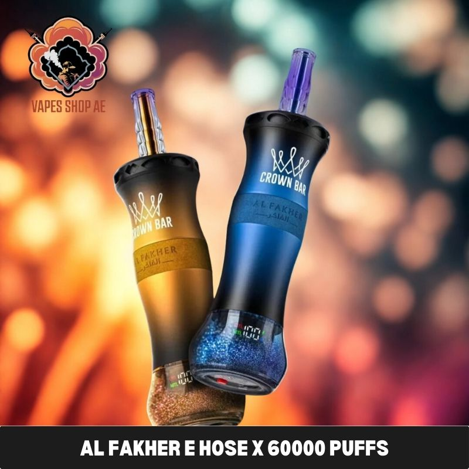
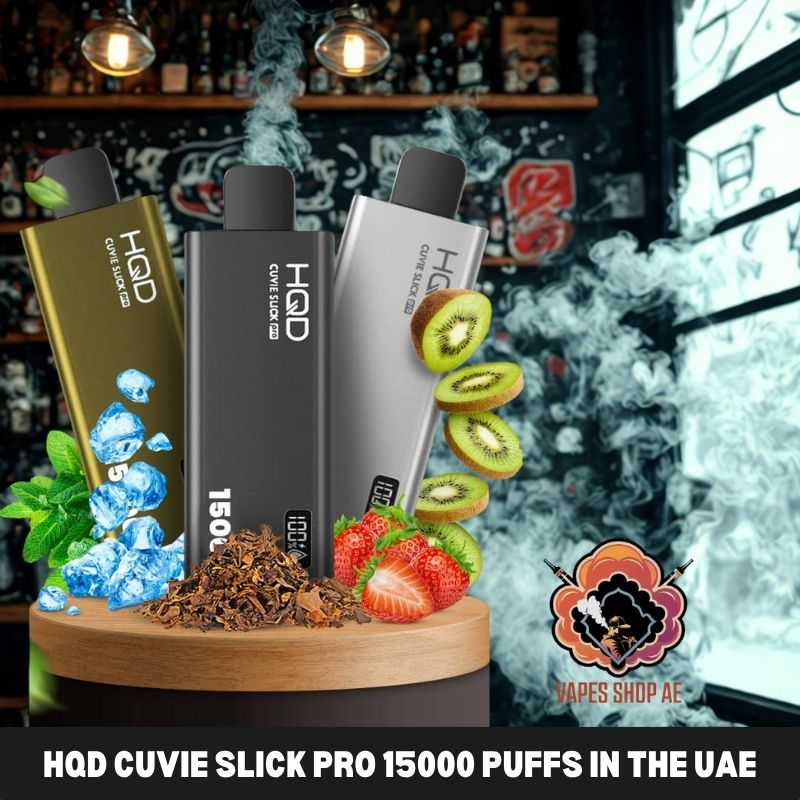

Product design is changing how people view modern vaping devices. Today, appearance, size, display, and build quality all influence product comparisons. Two devices that attract attention through their specifications are the Al Fakher E Hose X 60000 Puffs and HQD Cuvie Slick Pro 15000 Puffs. Both have different designs and advertised puff capacities. Want to understand what makes them stand out? Explore their features, design characteristics, and key differences before making an informed comparison.

The Al Fakher E Hose X 60000 Puffs combines the brand's shisha-inspired identity with a modern disposable device format. Its advertised capacity of 60,000 puffs gives it a high-capacity profile. Its name also connects it with Al Fakher's established presence in the shisha market.
The E Hose X focuses on a distinctive appearance and a device format inspired by traditional shisha culture. Its design aims to bring familiar shisha branding into a more modern product category.
Its larger advertised capacity also makes it different from smaller disposable models. However, actual puff counts can vary with usage patterns and device conditions. The advertised figure should not be treated as a guaranteed result.
Brand recognition plays an important role in product presentation. Al Fakher has a strong association with shisha products, which gives this model a recognisable identity.
Its design reflects the shift towards combining traditional product influences with modern electronic formats.
The HQD Cuvie Slick Pro 15000 Puffs offers a different product profile. Its advertised capacity is 15,000 puffs, placing it in a lower capacity category than the E Hose X.

The Cuvie Slick Pro carries a modern product identity through its streamlined appearance. Its design focuses on a more compact visual profile compared with larger-format devices.
The HQD name also has recognition in the disposable vaping category. For product comparisons, its packaging, specifications, and manufacturer information deserve attention.
The 15,000-puff figure describes the manufacturer's advertised estimate. Actual performance may differ depending on several factors.
A responsible comparison should also consider battery specifications, liquid information, charging requirements, and safety warnings where provided. These details offer a clearer picture than puff count alone.
The main difference between these products is their advertised capacity and overall product positioning. The E Hose X carries a 60,000-puff claim, while the HQD Cuvie Slick Pro 15000 Puffs carries a 15,000-puff claim.
Their designs also reflect different approaches to product presentation. One draws on shisha-inspired branding, while the other uses a streamlined disposable-device identity.
Product comparisons should go beyond colours and external finishes. Packaging authenticity, ingredient disclosure, manufacturer details, and applicable safety standards all matter.
Neither a larger puff claim nor a stylish exterior proves that a product is safe. Nicotine products can cause dependence and carry health risks. Non-smokers should not start using them.
The Al Fakher E Hose X 60000 Puffs and HQD Cuvie Slick Pro represent two different approaches to modern device design. One highlights shisha-inspired branding and a higher advertised capacity, while the other focuses on a streamlined appearance and a lower capacity claim.
Understanding their characteristics helps readers compare them more effectively. Look beyond product styling, verify specifications, and remember that vaping is not risk-free. Responsible decisions should always come before trends.
It carries an advertised capacity of 60,000 puffs. Actual performance may vary with usage.
The product carries an advertised capacity of 15,000 puffs. This figure is an estimate, not a guaranteed usage count.
Check authentic packaging, manufacturer information, ingredient details, safety warnings, and compliance with local regulations.